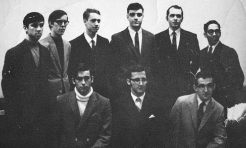

Starting in 1969, the complete history of Epsilon Nu can never be fully compiled. Each Brother who passes through the UMass campus holds his or her own story of how things happened. It has been said that one can learn from the past; here at UMass, that saying holds very true, as each Brother of Epsilon Nu has consistently regarded chapter history as a valued treasure. Epsilon Nu keeps in touch with its roots by carrying on traditions which have endured over decades, in hopes that future Brothers will do the same.
Our Chapter
The Epsilon Nu Chapter of Kappa Kappa Psi was founded at the University of Massachusetts, Amherst on May 16, 1969 by eleven students, also known as our founding brothers.
Throughout our years of serving bands, over 300 Brothers have been initiated into our organization. Epsilon Nu has many honorary members:
| William C. Venman | John W. Lederle | Larry Van Weed |
| Ronald Weaver | R. Wayne Blackwell | Max Culpepper |
| Gerald Grady | George N. Parks | Henry Koffler |
| Jonathan Hite | Dr. William Cosby, Jr. | Thomas P. Hannum |
| Dr. Albert Huetteman | Dr. Charles Bestor | Fredrick Tillis |
| Joel Gittle | Joseph Duffey | David Sporney |
| Heidi Sarver | Todd Morrison | Thomas Lizotte |
| Robert Hammerton | Christine McHugh | Malcolm Rowell |
| Lynn Klock | Jeff Holmes | Brian Carrol |
| Walter Chestnut | Dr. Timothy Lautzenheiser | Michael Klesch |
| Jason Freeman | Dr. David K. Scott | Keith Paul |
| Christopher Thornley | Dr. Benedict Smar | Laura Klock |
| Al Graff | Colin McNutt | |
The Epsilon Nu Chapter sponsor is Thomas P. Hannum, Associate Director of the UMass Minuteman Marching Band.
Several Honorary Brothers of the Epsilon Nu Chapter of Kappa Kappa Psi have been awarded the Distinguished Service to Music Medal: George N. Parks, Dr. Timothy Lautzenheiser and Walter M. Chestnut.
Three Honorary Members have been awarded the A. Frank Martin Award: George N. Parks, Thomas P. Hannum, and Walter M. Chestnut. Dr. Chestnut, along with our previous Chapter sponsor Dr. John Jenkins are both Life Members of the Nu Chapter at the University of Michigan.
In 1984, Epsilon Nu Colonized its first little brother Chapter, Theta Beta at Boston University. Again in 1993, EN colonized another chapter at the University of New Hampshire, Iota Phi.
Founding Brothers
Top (Left to Right): Robert J. Boiselle, William Bellows Jr., Thomas Ballieul, Douglas L. Purcell, Clifden Banner, Richard Bartolomeo, Bottom (Left to Right): Roger Anstey, Andrew Phillips, Thomas Parker, Not Shown: Stanley Rosenberg, Frank Ruggerio
Purposes
- To promote the existence and welfare of the college and university bands and to cultivate at large a wholesome respect for their activities and achievements.
- To honor outstanding band members through privilege of membership extended as a reward for technical achievement and appreciation for the best in music.
- To stimulate campus leadership and promulgate an uncompromising respect through the medium of the college band for gracious conduct, good taste, and unswerving loyalty.
- To foster a close relationship between college bands and promote a high average of attainment by the performance of good music and selection of worthwhile projects.
- To provide a pleasant and helpful social experience for all engaged in college band work and to cooperate with other musical organizations in any manner consistent with the purposes of the institution at which chapters are located.
Creed
We, the brothers of Kappa Kappa Psi, believe that service to the college or university band program fosters responsibility, loyalty, and leadership; that a spirit of brotherhood is enhanced by the participation in a band program; that music is a universal language and truly the greatest of the arts; and that through fraternal participation, each member will strive for the highest.
Hymn
Submitted by the Eta Gamma (Morgan State) Chapter. Adopted by National Chapter 1995. Arrangement and Words by Scott Jeffrey Heckstall, Jr. (Eta Gamma 1977).
K K Psi, as we go
Through this wilderness, here below.
Guide my feet, through peaceful eyes.
I am a Brother of K K Psi.
I do not know, how long 'twill be.
Or what the future, holds for me.
But this I know, if I must die.
I am a Brother of K K Psi.
I do not know, how long 'twill be.
Or what the future, holds for me.
But this I know, if I must die.
I am a Brother of K K Psi.
Song
For college bands we
strive to do our utmost,
Pledged are we to the Kappa Kappa Psi.
Fraternal Spirit, brotherhood, and loyalty,
Gather 'round ye Kappa Kappa Psi.
This Brotherhood that binds us all together,
It will be strong and never will die.
It's built on love we have for our fraternity.
Here's a toast to Kappa Kappa Psi.